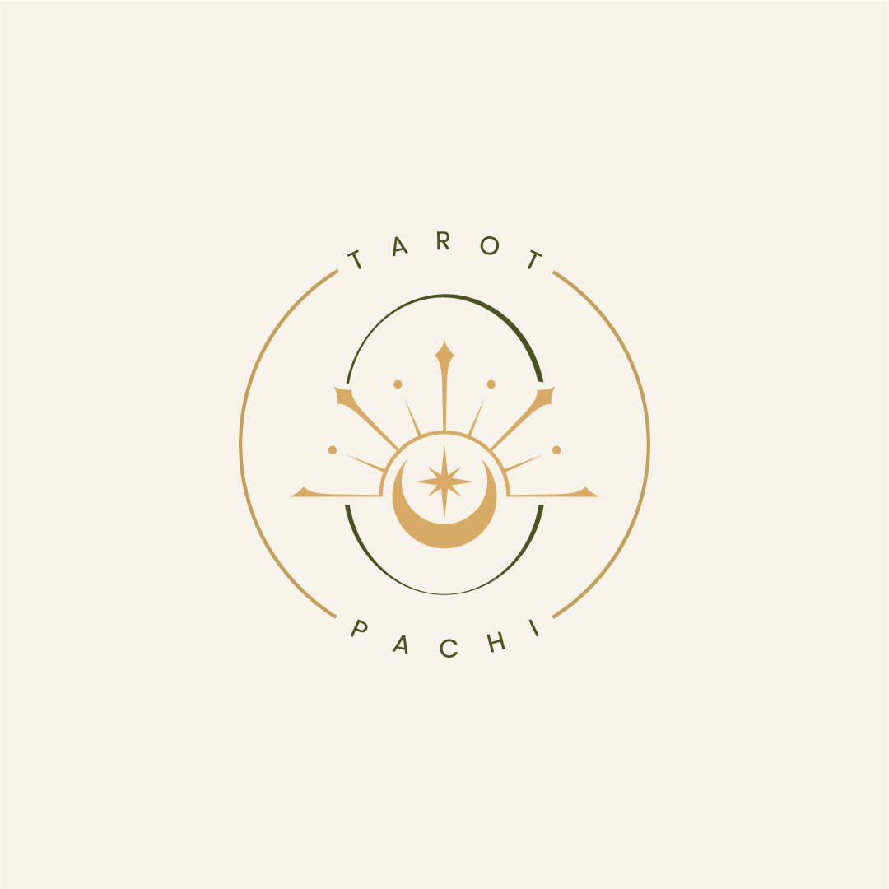

Tarot Intuitivo & Direção
Leituras para momentos de dúvida, escolha e transição.
Tarot intuitivo para encontrar seu norte com presença, intenção e direção prática.
Aqui, o tarot não é usado para terceirizar decisões ou gerar ansiedade sobre o futuro. Ele funciona como uma bússola simbólica para enxergar caminhos, tensões, sinais de atenção e próximos movimentos.
Encontrar minha BússolaSeção Sobre / Manifesto — conteúdo na Fase 2
Seção Serviços — conteúdo na Fase 2
Seção Como Funciona — conteúdo na Fase 2
Seção Rota de Decisão — conteúdo na Fase 2
Seção Rituais & Alquimia — conteúdo na Fase 2
CTA final — conteúdo na Fase 2